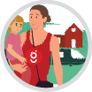

Osallisuus- ja vuorovaikutussuunnitelma
0.1
Esipuhe
Osallisuudella tarkoitetaan ihmisten kokemaa kuulumista yhteiskuntaan, yhteisöihin ja elämistä itselle sopimilla tavalla. Osallisuutta kokeva tulee kuulluksi ja edistää tärkeäksi kokemiaan asioita.Osallistumisoikeus yhteiskunnan ja oman ympäristönsä kehittämiseen määritellään perustuslaissa. Kuntalaisten osallisuuden edistäminen on osa demokratiaa. Kunta tarjoaa osallistumismahdollisuuksia, tukee omaehtoista toimintaa ja hyödyntää kehityksessä kuntalaisten ja yhteisöjen osaamista. (mukaillen: Kurikka P. 2014)
Tähän Kangasalan kaupungin osallisuus- ja vuorovaikutussuunnitelmaan on koottu Kangasalan kaupungin nykyisiä osallisuuden muotoja ja toimintatapoja sekä kuvattu mahdollisia uusia tapoja. Suunnitelman tarkoituksena on antaa vinkkejä osallisuuden eri muodoista ja kannustaa aktiiviseen osallisuuteen kaupungissa. Osallisuuden tulee kattaa kaupungin koko toiminta ja osallisuus on kirjattu myös kaupungin strategiaan 2.
1 Valmistelu ja tavoitteet
Suunnitelman tarkoituksena on avata osallisuuden käsitettä ja kartoittaa nykyisen osallisuuden muotoja sekä kehittää osallisuutta ja kartoittaa uusia toimintatapoja. Suunnitelmaa on käsitelty esimerkiksi (tähän luettelo suunnitelman käsittelytahoista esim. hyvinvointiryhmä, xxxx).
2 Strategia

Osallisuus ja vuorovaikutussuunnitelman tavoitteena on kaupungin, asukkaiden ja sidosryhmien välisen vuorovaikutuksen edistäminen ja tukeminen. Työ tukeutuu Kangasalan kaupungin strategiaan, jossa yhtenä tavoitteena on Osallistava ja palveleva, sujuvan arjen Kangasala. Kangasalan kaupunkistrategiaan voi kokonaisuudessaan tutustua tämän linkin kautta - Kangasalan kaupunkistrategian 2029.
2.1 Osallistava ja palveleva, sujuvan arjen Kangasala

Kerromme aktiivisesti ja avoimesti toiminnastamme
Kuulemme palautteen ja kehitämme asiakaskokemusta
Edistämme osallisuutta ja yhteisöllisyyttä, yhtenä painotuksena perheiden ja vanhemmuuden tukeminen
Lisäämme avustuksilla ja yhteistyöllä kolmannen sektorin vaikuttavuutta
Edistämme esteettömyyttä palveluissa, suunnittelussa ja rakentamisessa
Lisäämme sähköisiä palveluita kaupunkilaisille
Vastuullinen viestintä on kaikkien yhteinen asia
3 Osallisuuden tasot ja muodot
Erilaisia kuntalaisen osallistamisen muotoja voidaan luokitella seuraavan jaon mukaan: tieto-, suunnittelu-, päätöksenteko-, ja toimintaosallisuus. Kunnan on hyvä tarjota monenlaisia osallistamisen tapoja ja muotoja. Alla olevassa taulukkossa on kuvattu osallisuuden tasoja kaupungin ja asukkaan näkökulmasta. (mukaillen: Kurikka P. 2014)
| Tieto-osallisuus | Suunnittelu-osallisuus | Päätöksenteko-osallisuus | Toimeenpano-osallisuus | |
|---|---|---|---|---|
| Kaupunki | Tuottaa riittävästi, selkeästi ja monikanavaisesti tietoa palveluista ja osallistumismahdollisuuksista. | Tarjoaa ja käyttää riittävästi erilaisia ja monipuolisia tapoja osallistua toiminnan ja palvelujen suunnitteluun ja kehittämiseen. | Tarjoaa ja käyttää riittävästi erilaisia ja monipuolisia mahdollisuuksia osallistua päätöksenteon valmisteluun ja päätöksentekoon. | Tukee ja mahdollistaa konkreettisen osallistumisen |
| Asukas/ asiakas | Saa tietoa palveluista ja osallistumismahdollisuuksista sekä tuottaa niistä tietoa. | Osallistuu itseään ja lähiympäristöään koskevaan toiminnan ja palvelujen suunnitteluun ja kehittämiseen. | Osallistuu itseään ja lähiympäristöään ja palveluja koskevaan päätöksentekoon. | Osallistuu konkreettisesti toimintaan omassa lähiympäristössään ja osallistuu palvelujen tuottamiseen eri tavoin. |
4 Tieto-osallisuus
Kuntalaisilla on oikeus tiedon saamiseen ja tuottamiseen. Tähän osallisuuteen liittyy esimerkiksi tiedottaminen, kuuleminen ja vastaaminen kyselyihin.
4.1 Aloite
Kuntalain mukaan asukkaalla sekä alueella toimivalla yhteisöllä ja säätiöllä on oikeus tehdä aloitteita kunnan toimintaa koskevissa asioissa. Kirjallisen aloitteen voi tehdä sähköisen aloitesivuston kautta kuntalaisaloite.fi tai toimittamalla kirjallisen aloitteen kaupungin kirjaamoon.
4.2 Asukas- ja info-tilaisuudet
Kaupunki ja sen toimijat järjestävät asukkaille ja eri toimijoille avoimia tilaisuuksia. Keskustelutilaisuudet tarjoavat asukkaille tilaisuuden kertoa mielipiteistään asiantuntijoille ja päättäjille. Onnistunut tilaisuus synnyttää vuoropuhelua ja tuloksellista dialogia.
4.3 ✴️ Avoimet ovet
Onko Kangasalla tällaista toimintaa?
4.4 ✴️Avoin palautteiden ja aloitteiden etenemisprosessin seuranta
Onko tarvetta?
4.5 Esityslistat, pöytäkirjat ja viranhaltijapäätökset
Kaupungin luottamustoimielinten esityslistat ja pöytäkirjat löytyvät kaupungin verkkosivuilta Esityslistat ja pöytäkirjat sekä viranhaltijapäätökset 1.1.2019 alkaen
4.6 ✴️ Info asukkaiden palautteiden ja aloitteiden huomioimisesta
Palautteen antajalle ja aloitteen tekijälle vahvistetaan, miten hänen antamansa palaute tai aloite on otettu huomioon asioiden suunnittelussa ja päätöksenteossa. Jos palautetta tai aloitetta ei ole voitu ottaa huomioon, niin perustellaan huomioimatta jättäminen. Miten toimii tällä hetkellä?
4.7 Kangasalan kaupunki-info
Kangasalan kaupunki-info palvelee Lentolan Prismassa. Kaupunki-info palvelee tiistaista perjantaihin klo 10 – 18 sekä lauantaisin klo 10 – 14. Puhelin infoon on 044 481 3022
4.8 Kaupungin kirjaamo - virallinen yhteydenotto
Kaupungin asukas voi tehdä kaupungin hallinnolle virallisen yhteydenoton joko sähköisesti sähköpostiosoitteeseen kirjaamo@kangasala.fi tai toimittamalla yhteydenotto kaupungin kirjaamoon. Virallista yhteydenottoa ei voi tehdä nimettömänä.
4.9 Kaupungin palautekanavat
Kaupungin palautekanava: Kaupungin palautekanava
Palaute tekniselle keskukselle: Elinympäristö-, infra- ja puistopalaute
4.10 Kokousvideoinnit
Kangasalan Sanomat videoi kaupunginvaltuuston kokoukset. Tallenteet löytyvät Kangasalan Sanomien verkkosivuilta.
4.11 Kyselyt päätöksenteon tueksi
Kaupunki toteuttaa sähköisiä kyselyitä asukkaille kaupungin toiminnan kehittämiseksi.
Hyvinvointikysely: Ei tällä hetkellä voimassaolevia kyselyitä
Kaupunkikehityskysely: Kaupunkikehitystiimi järjesti syksyllä 2020 kyselyn kaupunkilaisille, jossa pyydettiin kaupunkilaisten näkemyksiä Kangasalan kaupungin nykytilasta ja ajatuksia kaupungin kehittämisestä. Linkki Kaupunkikehityskyselyn koosteeseen.
Kyselyt oppilaille ja huoltajille (käyttäjillä tulee olla wilma-tunnukset): Opetustoimen tai koulujen omat kyselyt, joista tiedotetaan vastaajia erikseen
Nuorisovaltuuston kyselytTäällä ilmoitetaan nuorisovaltuuston kohdennetuista kyselyistä nuorille ajankohtaisista asioista. Toteutetaan koulutyön ohessa.
Vapaa-aikapalveluiden tyytyväisyyskyselytKyselyt nuoriso- ja liikuntapalveluiden käyttäjille oman toiminnan kehittämiseksi.
4.12 Monikanavainen viestintä
Ajankohtaiset uutiset: Kangasalan kaupunki - ajankohtaista
Kuulutukset ja ilmoitukset: Kangasalan kaupunki - ajankohtaista
Twitter:

Facebook:
Instagram: Kangasalan kaupunki
Videot:
(Dreambroker-kanava): Kangasala-kanava
Youtube: Kangasalan kaupunki

4.13 ✴️ Osallistukangasala.fi
Onko Kangasalla tarvetta erilliselle sivustolle, jossa on kootusti kaikki?
4.14 ✴️ Palvelupalaute - HappyOrNot-tyyppisesti
Onko Kangasalla tarvetta?
4.15 Sähköiset osallistumiskanavat
- Kuntalaisaloite.fi
- Kangasalan kuntalaisaloite tai sähköpostiosoitteeseen kirjaamo@kangasala.fi
- Otakantaa.fi
- Sähköinen hankintakanava - Hilma
4.16 Tilastotietoa Kangasalta
Tilastotietoa Kangasalta on saatavissa useammasta paikasta:
4.17 ✴️Viestinnän vuosikello
Onko Kangasalla tarvetta?
4.18 ✴️Vuosikello kaupungin toiminnasta
Onko Kangasalla tarvetta?
5 Suunnitteluosallisuus
Suunnitteluosallisuudessa kuntalainen on mukana kaupungin ja kuntalaisen välisessä suunnittelussa ja valmistelussa. Tästä esimerkkinä osallistuminen palvelukehitykseen ja yhteissuunnitteluun.
5.1 ✴️ Alueraadit
Miten toimii tällä hetkellä?
5.2 ✴️ Asiakasraadit
Miten toimii tällä hetkellä?
5.3 Asukas- ja infotilaisuudet sekä vuorovaikutteiset työpajat
Kaavoituksen yhteydessä järjestetään yleisötilaisuuksia, työpajoja ja kävelyjä. Näissä Keskustellaan alueen kehittämistarpeista ja suunnitelmista. Tilaisuuksista ilmoitetaan kaavan kuulutuksissa (lehdet, kaupungin ilmoitustaulut, ajankohtaista), kirjeitse osallisille sekä kaavoituksen sivuilla (nähtävillä ja vireillä olevia asemakaavoja ja nähtävillä ja vireillä olevia yleiskaavoja). Lue lisää tapahtumista tapahtumakalenterista
5.4 Ennakkovaikutusten arvioinnit
Miten toimii tällä hetkellä?
5.5 ✴️ Kerrokantasi - verkkopalvelu
Olisiko tarvetta olla tällainen palvelu kaavakuulemisiin?. Helsingin mallin https://kerrokantasi.hel.fi mukaan asukkaat voivat tulla kehittämään kaupunkia ja osallistua avoimiin kuulemisiin.
5.6 ✴️ Kokemusasintuntijoiden käyttö palvelukehityksessä
Miten toimii tällä hetkellä?
5.7 ✴️ Lasten ja nuorten vaikuttajapäivä
Onko Kangasalla tarvetta?
5.8 Luontoretket
Kaupungin ympäristönsuojelu järjestää vuosittain useita luontoretkiä. Lue lisää tapahtumista tapahtumakalenterista
5.9 Luottamushenkilöiden keskustelutilaisuudet
Johtavat kunnallispoliitikot jalkautuvat asukasiltoihin non neljä kertaa vuodessa eri puolille kaupunkia. Lue lisää tapahtumista tapahtumakalenterista
5.10 Osallistuva budjetointi
Osallistuva budjetointi on toimintatapa, jossa eri ryhmät esimerkiksi asukkaat, järjestöt ja yritykset käyvät vuoropuhelua taloudellisten resurssien kohdentamisesta löytääkseen yhteisen näkemyksen niiden käytölle.
5.11 ✴️ Vapaa-ajanasukkaiden foorumi
Kuinka laajana?
5.12 ✴️ Viestinnän kuntalaisraati, näkemyksiä viestinnän kehittämiseen
Onko Kangasalla tarvetta?
6 Päätösosallisuus
Päätösosallisuudessa kuntalainen osallistuu suoraan palvelujen tuottamista tai asuinaluettaan koskeviin päätöksiin.
6.1 Aloite
Kuntalain mukaan asukkaalla sekä alueella toimivalla yhteisöllä ja säätiöllä on oikeus tehdä aloitteita kunnan toimintaa koskevissa asioissa. Kirjallisen aloitteen voi tehdä sähköisen aloitesivuston kautta kuntalaisaloite.fi tai toimittamalla kirjallisen aloitteen kaupungin kirjaamoon.
6.2 Kansanäänestys
Kaupunginvaltuusto voi päättää, että kaupungille kuuluvasta asiasta toimitetaan kaupungin alueella neuvoa-antava kansanäänestys. Äänestysoikeus määräytyy samoin kuin äänioikeus kuntavaaleissa. Tulos on neuvoa-antava.
6.3 Kaupungin vaikuttamistoimielimet
Kaupunginhallitus asettaa vaikuttamistoimielimet. Kangasalla on toiminnassa seuraavat vaikuttamistoimielimet:
Asukas- ja alueneuvosto
Nuorisovaltuusto
Vammaisneuvosto
Vanhusneuvosto
Vapaa-ajantoimikunta
6.4 Kaupungin viralliset toimielimet
- Kaupunginvaltuusto
- Kaupuginhallitus
- Lautakunnat
6.5 Lausunto
Kangasalan kaupunki pyytää julkisilla kuulutuksilla lausuntoja eri tahoilta niin kaupunkiorganisaation sisällä kuin myös asianosaisilta, joita aina kulloinenkin aihe koskee. Lausunnot otetaan huomioon päätöksenteossa.
6.6 Muut yhteistyöfoorumit
Mitä muita yhteistyöfoorumeita on?
6.7 Muutoksenhaku
Muutoksenhaku on yksi vaikuttamiskeino. Muutoksenhaun kohteena voivat yleensä olla kaupungin viranomaisen lopulliset päätökset. Valmistelua tai täytäntöönpanoa koskeviin päätöksiin ei voi hakea muutosta.
6.8 Äänestäminen
Äänestäminen on osallistumista ja vaikuttamista. Kuntavaalit pidetään neljän vuoden välein.
7 Toimintaosallisuus
Toimintaosallisuudessa kuntalainen osallistuu toimintaan elinympäristönsä kehittämiseksi, esimerkkinä siivoustalkoot.
7.1 Asukastoiminta asukas- ja kyläyhdistyksissä
Kangasalla on aktiivista asukas- tai kyläyhdistystoimintaa. Yhteystiedot löytyvät kaupungin verkkosivuilta.
7.2 Asukkaiden omaehtoisen toiminnan tukeminen
Kaupunki tukee asukkaiden omaehtoista toimintaa oman asuinalueen kehittämiseksi ja elävöittämiseksi.
Kulttuuritoiminnan kohdeavustus Hyvinvointilautakunta myöntää avustuksia yhdistysrekisterissä oleville kangasalalaisille kulttuuriyhdistyksille.
Kulttuuristipendit Kulttuuristipendien hakuaika on vuosittain maaliskuussa. Stipendiä voi hakea myös toisen henkilön puolesta tämän suostumuksella (asianosaisen tai huoltajan suostumus/allekirjoitus).
Björkqvist-rahaston apurahat ja stipendit Björkqvist-rahastosta myönnetään apurahoja Kangasalan peruskoulusta tai toisen asteen oppilaitoksesta päättötodistuksen saaneiden hakijoiden tieteelliseen tutkimukseen tai taiteelliseen toimintaan.
Nuoriso - toiminta-avustus Sivistyslautakunta avustaa nuorisojärjestöjä ja järjestäytyneitä nuorisoryhmiä vuosiavustuksella.
Liikunta - toiminta-avustus Hyvinvointilautakunta myöntää toiminta-avustuksia yhdistysrekisterissä oleville kangasalalaisille liikunta- ja urheiluseuroille ja yhdistyksille. Toiminta-avustusten hakuaika on vuosittain 1.-31.3.
Liikunta - kohdeavustus Liikunnan kohdeavustukset tulee hakea talven toiminta-ajalta 1.11.-30.4.Kohdeavustusta myönnetään ensisijaisesti yhdistysrekisterissä olevien seurojen valmentaja-, ohjaus ja toimitsijakoulutuksesta aiheutuneisiin kustannuksiin.
Valmennus- ja kannustusstipendi Stipendin kohteena ovat 10-20-vuotiaat nuoret, jotka kilpailevat juniori tai/sekä yleisessä sarjassa.
7.3 ✴️ Lähiruokatuottajien verkosto osana vapaa-ajanfoorumia 5.11
Miten toimii tällä hetkellä?
7.4 Nuorten neliö
Nuorten neliö - kangasalalaisille 16 – 29 -vuotiaille nuorille tarkoitettu avoin kohtaamispaikka
7.5 ✴️ Omaehtoisen toiminnan tukeminen
Miten toimii tällä hetkellä? Tilavaraukset, yms.
7.6 Oppilaskunnat
Oppilaskuntien yhteystiedot löytyvät kunkin koulun verkkosivuilta.
7.7 ✴️ Pop-up toiminta
Miten toimii tällä hetkellä?
7.8 ✴️ Talkootoiminta
Miten toimii tällä hetkellä?
7.9 ✴️ Tapahtumakumppanuudet
Miten toimii tällä hetkellä?
7.10 Vanhempainyhdistykset
Kaikilla kouluilla toimii vanhempainyhdistys. Yhteystiedot löytyvät koulujen sivuilta.
7.11 Vapaaehtoistyö
Vapaaehtoistyön keskuksena toimii Kangasalla Jalmarin Koto yhteistyössä SPR:n kanssa. Seurakunnalla on myös omaa ystäväpalvelutoimintaa sekä Kangasalla että Pälkäneellä. MLL:n paikallisyhdistys tekee vapaaehtoistyötä kangasalalaisten lasten ja lapsiperheiden hyväksi. Tukihenkilötoiminta
8 Osallisuuden arviointi ja mittaaminen
TEAviisari kattaa kuusi eri tietokokonaisuutta: kuntajohdon, perusopetuksen, lukion, ammatillisen koulutuksen, perusterveydenhuollon, liikunnan ja kulttuurin. Tietokokonaisuudet koostetaan kuudesta ulottuvuudesta, joista yksi on osallisuus.
Kuntakohtainen vertailutieto mittaa yleensä osallisuutta siten, onko jotakin tehty (Kyllä) tai ei ole tehty (Ei). Esimerkkejä:
kunta on järjestänyt keskustelutilaisuuden
kunta on tehnyt asiakas-/käyttäjäkyselyn
kunnalla on keskustelupalsta internetissä, somessa tms.
9 Osallisuus lainsäädännössä
Kuntalain 5 luku 22 §:n mukaan kunnan asukkailla ja palvelujen käyttäjillä on oikeus osalloistua ja vaikuttaa kunnan toimintaan. Valtuuston on pidettävä huolta monipuolisista ja vaikuttavista osallistumisen mahdollisuuksista. Kunnat päättävät siis itse toimintatavoistaan
22 § Osallistumis- ja vaikuttamismahdollisuudet
- Kunnan asukkailla ja palvelujen käyttäjillä on oikeus osallistua ja vaikuttaa kunnan toimintaan. Valtuuston on pidettävä huolta monipuolisista ja vaikuttavista osallistumisen mahdollisuuksista.
- Osallistumista ja vaikuttamista voidaan edistää erityisesti:
- järjestämällä keskustelu‐ ja kuulemistilaisuuksia sekä kuntalaisraateja;
- selvittämällä asukkaiden mielipiteitä ennen päätöksentekoa;
- valitsemalla palvelujen käyttäjien edustajia kunnan toimielimiin;
- järjestämällä mahdollisuuksia osallistua kunnan talouden suunnitteluun;
- suunnittelemalla ja kehittämällä palveluja yhdessä palvelujen käyttäjien kanssa;
- tukemalla asukkaiden, järjestöjen ja muiden yhteisöjen oma‐aloitteista asioiden suunnittelua ja valmistelua.
20 § Äänioikeus kuntavaaleissa
21 § Äänestysoikeus kunnallisessa kansanäänestyksessä
23 § Aloiteoikeus
24 § Kunnallinen kansanäänestys
25 § Kansanäänestysaloite
26 § Nuorisovaltuusto
27 § Vanhusneuvosto
28 § Vammaisneuvosto
29 § Viestintä
Lähteet
Copyright 2023 Kangasalan kaupunki, LGPL 2.1